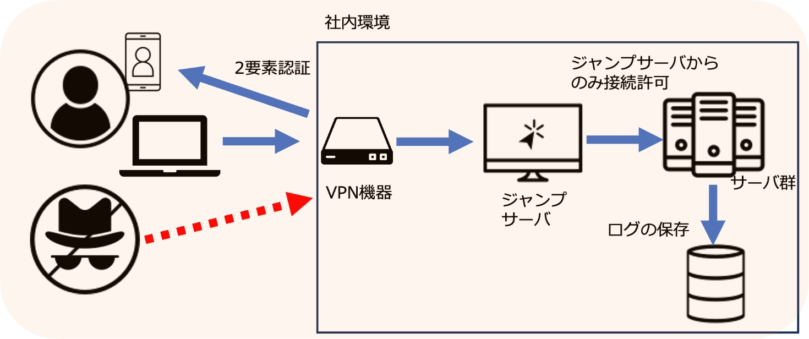

2-3-3. 具体的な対応策
ランサムウェア被害のケースをみると、VPN機器から不正侵入され、サーバの特権IDを使用してサーバのデスクトップ上から不正プログラムを実行されるケースが後を絶ちません。対策、運用については、まず、VPNで接続するためのインターネットとの接点を絞りこみ、接続してくる者の身元を確認、本人であることを証明させる多要素認証の仕組みを講じることが必要となります。それ以外にも、特定のPCやサーバからしか重要なサーバのデスクトップに接続できないような仕組みや、ログの長期保管なども重要な要素となります。

図14. 対応策の概要図
実施するべき対策と運用
- VPN接続の認証に多要素認証を実装し、接続する個人の身元を証明します。
- ジャンプサーバを構築し、社内のサーバへのリモートデスクトップはジャンプサーバからの接続のみ許可します。
- サーバの特権アカウントのパスワードを、定期的に変更します。
- PCのAdministratorアカウントを無効化するか、LAPSなどのツールを用いて定期的に動的なパスワード変更を行います。
- サーバやネットワーク機器のログを長期的に取得し、定期的に確認します。
- 社内で利用しているネットワーク機器やソフトウェアの脆弱性情報について、定期的に確認します。
- ネットワーク機器のファームウェアや、使用しているPCのOS、ソフトウェアのセキュリティパッチを適用します。